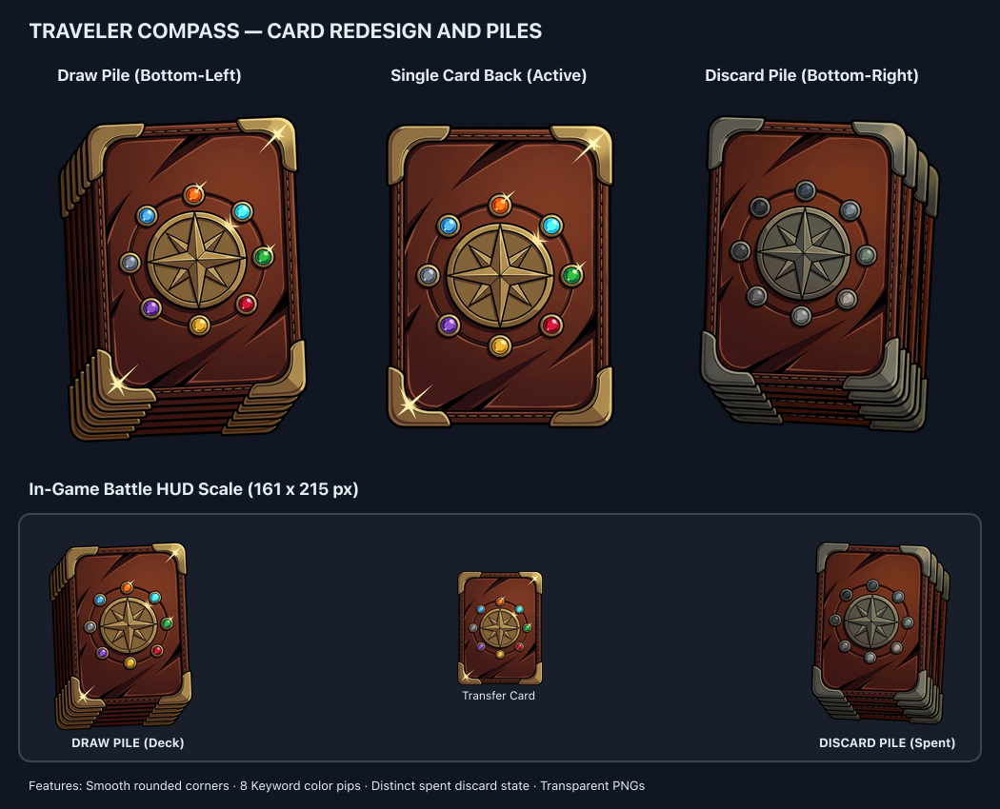

Traveler's Compass — Card Back, Draw Pile & Discard Pile
Deck Pile master (Draw) ·
Single Card Back master (Active) ·
Discard Pile master (Spent) ·
Single Card Back (Spent)
Approved by user on 2026-09-17. Features rounded corners conforming to digital card game geometry,
8 keyword color pips, and a distinct spent/exhausted state for the discard pile.
